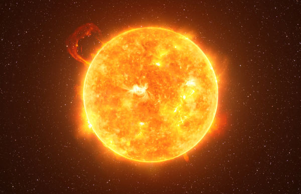
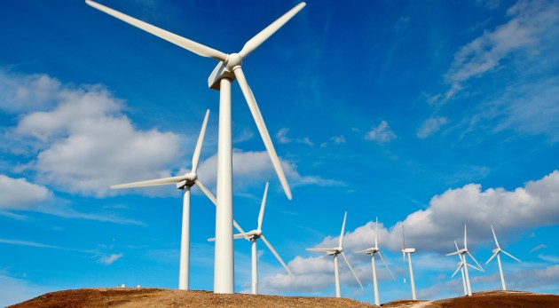

O Contexto Global da Crise Energética
A demanda mundial por energia cresce a cada ano. Com mais de 8 bilhões de pessoas no planeta, a produção e o consumo de energia são responsáveis por cerca de 73% de todas as emissões de gases de efeito estufa geradas pela atividade humana.
O Painel Intergovernamental sobre Mudanças Climáticas (IPCC) alerta que, sem uma transição energética urgente, o aquecimento global poderá ultrapassar 2 °C ainda neste século, causando impactos irreversíveis nos ecossistemas e nas populações mais vulneráveis.
As energias renováveis surgem, portanto, não como uma opção, mas como uma necessidade civilizatória: uma resposta técnica, econômica e ética à crise climática global.

Energia Solar Fotovoltaica

A energia solar fotovoltaica converte a luz do sol diretamente em eletricidade por meio de células semicondutoras de silício. O Brasil é um dos países com maior potencial solar do mundo, com irradiação média de 4,5 a 6,5 kWh/m²/dia em praticamente todo o território.
Desde 2012, o custo dos painéis solares caiu mais de 90%, tornando a energia solar a fonte mais barata de eletricidade na história da humanidade em diversas regiões.
Vantagens da Energia Solar
- Fonte inesgotável e disponível em todo o território nacional
- Mínima emissão de CO₂ durante a operação
- Pode ser instalada em telhados residenciais, industriais e rurais
- Vida útil dos painéis superior a 25 anos
- Gera independência energética para o consumidor
Sabia que?
Em 2023, o Brasil atingiu a marca de 35 GW de capacidade solar instalada, tornando-se o 5º maior mercado solar do mundo e gerando mais de 600 mil empregos diretos e indiretos no setor.
Energia Eólica

A energia eólica utiliza a força dos ventos para movimentar turbinas e gerar eletricidade. O Nordeste brasileiro possui condições de vento excepcionais — constantes, fortes e de alta intensidade — o que torna a região uma das melhores do mundo para geração eólica.
O Brasil é hoje o 4º maior gerador de energia eólica do mundo e o primeiro da América Latina. Os estados do Ceará, Rio Grande do Norte, Piauí e Bahia lideram a geração nacional.
Capacidade Instalada por Região (2024)
- Nordeste: aproximadamente 90% da capacidade nacional
- Sul: ventos sazonais com bom aproveitamento no RS e SC
- Sudeste: potencial crescente em regiões de serra
- Offshore (costa): potencial estimado de 700 GW ainda inexplorado
💧 Hidrelétrica e 🌿 Biomassa
Além do solar e do eólico, o Brasil conta com outras fontes renováveis consolidadas que formam uma matriz energética diversificada e robusta.
Energia Hidrelétrica
A maior fonte de energia elétrica do Brasil. Grandes usinas como Itaipu (14 GW) e Belo Monte (11,2 GW) garantem a base da geração nacional. Representa cerca de 60% da capacidade instalada do país.
Biomassa
O Brasil é o maior produtor mundial de etanol de cana-de-açúcar. A biomassa — que inclui resíduos agrícolas, florestais e urbanos — representa uma fonte versátil de energia renovável para geração elétrica e térmica.
Energia de Maré e Ondas
Com mais de 7.400 km de costa, o Brasil tem enorme potencial para energia maremotriz e de ondas. Ainda em fase de pesquisa e desenvolvimento, essas fontes prometem revolucionar a geração nas regiões litorâneas.
Como Acontece a Transição Energética?
A transição para uma economia de baixo carbono é um processo gradual que envolve múltiplos atores — governos, empresas e cidadãos. Veja as principais etapas:
- Diagnóstico e planejamento: Mapeamento do potencial renovável disponível em cada região e definição de metas de descarbonização.
- Marco regulatório: Criação de leis e regulamentações que incentivem investimentos em energia limpa (ex.: Lei 14.300/2022 — microgeração solar).
- Investimento em infraestrutura: Expansão das redes de transmissão e distribuição para integrar novas fontes renováveis ao sistema elétrico.
- Pesquisa e inovação: Desenvolvimento de tecnologias de armazenamento (baterias), hidrogênio verde e smart grids para gerenciar a geração intermitente.
- Educação e conscientização: Formação de profissionais qualificados e sensibilização da sociedade sobre o consumo consciente de energia.
- Democratização do acesso: Programas de energia solar para comunidades de baixa renda e regiões remotas sem acesso à rede elétrica convencional.
- Monitoramento e ajustes: Acompanhamento contínuo dos indicadores de emissão, geração e custo para ajustar as políticas e estratégias adotadas.
ODS 7 — Energia Limpa e Acessível
Este trabalho está alinhado ao Objetivo de Desenvolvimento Sustentável nº 7 da ONU, que prevê garantir acesso à energia confiável, sustentável, moderna e acessível para todos até 2030 — um dos pilares da Agenda 2030 para o Desenvolvimento Sustentável.
Entre em contato conosco para saber mais ou compartilhar suas ideias sobre o tema. Acesse também a página Sobre o Grupo para conhecer os autores deste trabalho.
Evolução da Matriz Elétrica Brasileira
Veja como solar e eólica cresceram expressivamente na geração elétrica do Brasil entre 2015 e 2024, enquanto a dependência de fontes não renováveis caiu:
* Dados aproximados baseados em relatórios da ANEEL, EPE e ONS. Solar inclui micro e minigeração distribuída.